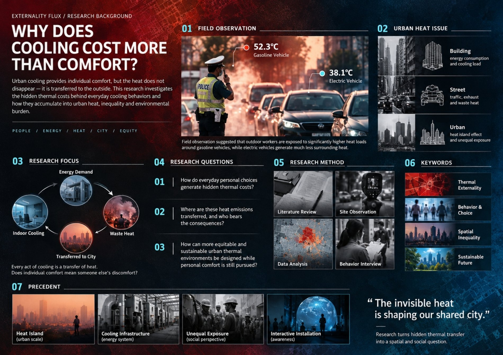
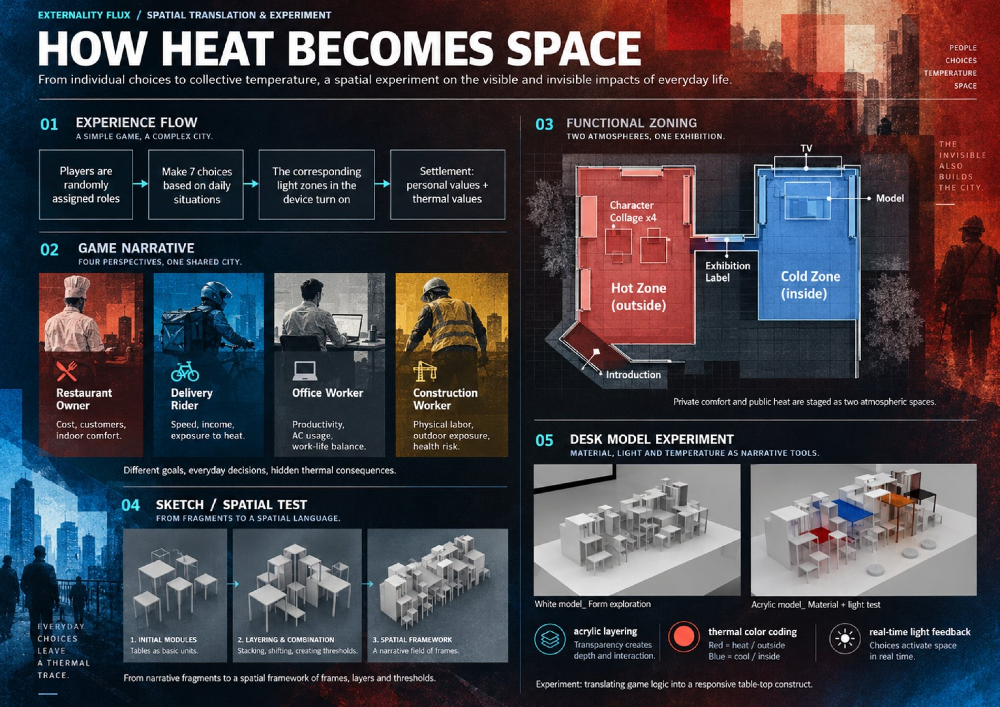
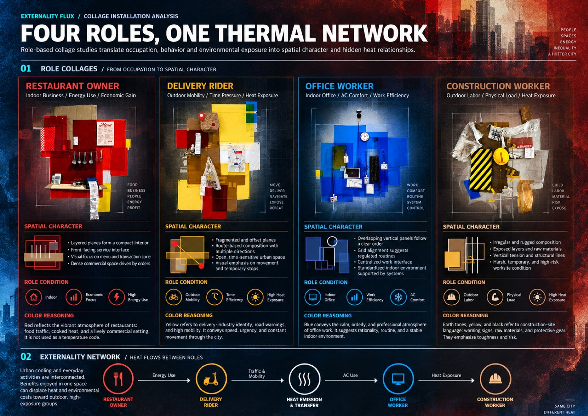
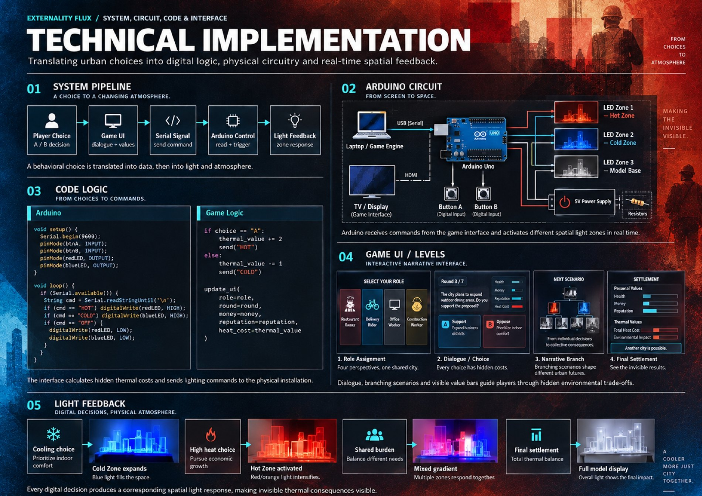
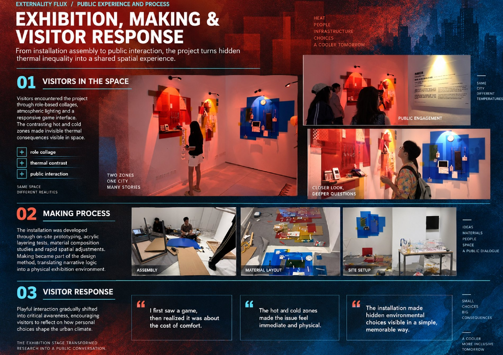

EXTERNALITY FLUX
《热阈衍流》是 2026 年夏校完成的小组项目。作品结合装置、游戏与空间叙事，围绕热不平等展开互动体验。
小组成员：Peilin He、Yujia Gu、Shiyi Jian、Ruixin Liang。






《热阈衍流》是 2026 年夏校完成的小组项目。作品结合装置、游戏与空间叙事，围绕热不平等展开互动体验。
小组成员：Peilin He、Yujia Gu、Shiyi Jian、Ruixin Liang。




